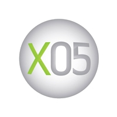

Xbox 360 Launch Lineup Announced
Developers commit to the success of the next-generation console.
By CESPage.com Xbox, Published 5th October 2005
X05 Amsterdam Launch Lineup
At X05, the Xbox brand experience for the games and entertainment industry, Microsoft Corp. unveiled an incredible lineup of games for the Xbox 360 video game and entertainment system as it gears up for launch Nov. 22 in North America, Dec. 2 in Europe and Dec. 10 in Japan. A series of special guests, including Cliff Bleszinski, lead designer for Epic Games Inc., Todd Hollenshead, co-owner and CEO of id Software Inc., and Gerhard Florin, executive vice president and general manager of International Publishing for Electronic Arts Inc. (EA), joined Xbox executives Robbie Bach, J Allard, Peter Moore and Chris Lewis on stage to talk about their new titles for Xbox 360.
Titles that will form part of the impressive Christmas holiday portfolio include these:
Kameo (MGS-Rare Ltd.). Renowned game developer Rare introduces Kameo: Elements of Power, a mystical action-adventure game available exclusively on Xbox 360, in which the ability to morph into unique and incredible warriors allows Kameo to search out and battle ever-present evil. Boasting impeccable next-generation graphics and innovative gameplay, "Kameo" shines as a giant leap in game development. Continuing its legacy of creating dynamic puzzles, immersive combat and enormous environments, Rare fuses multiple genres to create a strikingly fun gaming experience destined for widespread appeal.
Perfect Dark Zero (MGS-Rare). Joanna Dark returns in the Xbox 360-exclusive Perfect Dark Zero, the prequel to the international award-winning and multimillion-selling first-person shooter Perfect Dark from famed game developer Rare. A secret war has begun between shadowy corporations bent on world domination. Joanna Dark and her father, Jack, are caught up in the fight for the planet's future. A routine bounty-hunting mission rips open a global conspiracy that will change Joanna's destiny - forever.
Project Gotham Racing 3 (MGS-Bizarre Creations Ltd.). The popular PGR franchise zooms onto the Xbox 360, expanding many of the Project Gotham Racing features that gamers have grown to love. PGR 3 creates the ultimate roster of the hottest supercars in existence, introduces them to the high-definition era, and drops them into a completely new gaming world, where style rules the road. Racers define and create individually customized gameplay, and can race each other - online or offline. The Project Gotham Racing franchise is designed by Bizarre Creations, a long-established independent games developer, based in Liverpool, England. Bizarre is focused on producing high-quality, playable games that make the most of the advanced technology for which they are designed. Bizarre Creations can be found on the Web at http://www.bizarreonline.net or http://www.bizarrecreations.com.
Other great games announced or shown at X05 included these:
Crackdown (MGS-Real Time Worlds). Crackdown pushes the action-driving hybrid genre into the next generation with the introduction of the first truly 3-D persistent playground, highly innovative cooperative gameplay, and an extensive prop interaction system all while taking place in a massive and highly stylised urban centre. All strategies and tactics are acceptable provided players clean up the streets. Players roam a virtual city built to encourage and allow the full width, depth and height of the space to be explored and exploited. "Crackdown" will offer free-form gameplay, over-the-top action, and, for the first time in this genre, online cooperative play.
Gears of War (MGS-Epic Games Inc.). Blending the best of tactical action games with the best of survival horror titles, "Gears of War" is the first game developed by Epic Games exclusively for Microsoft Game Studios and Xbox 360. Gears of War thrusts gamers into a deep and harrowing story of humankind's epic battle for survival against the Locust Horde, a nightmarish race of creatures that surface from the bowels of the planet.
Too Human (MGS-Silicon Knights). In Too Human, players are treated to a nonstop barrage of action powered by the seamless integration of melee and ranged firearms combat and fueled by breathtaking visuals previously not possible thanks to a powerful combination of Xbox 360 and the Unreal Engine 3. Battles unfold in awesome scale as players engage in spectacular battles with vast numbers of enemies.
Mass Effect (BioWare). Set in the 23rd century, "Mass Effect" takes gamers on an epic adventure across a vast galactic community threatened by the armies of a legendary agent gone rogue. A spectacular new vision of the future from renowned developer BioWare, "Mass Effect" challenges players to lead an elite squad against overwhelming odds in order to restore interstellar peace. "Mass Effect" is the first in a trilogy of games with an overarching story that will allow players to shape the destiny of not only humanity, but every species in the galaxy.
FIFA 06: Road to FIFA World Cup (Electronic Arts). EA celebrates its new exclusive FIFA World Cup interactive entertainment partnership with the release of "FIFA 06: Road to FIFA World Cup, a game that immerses players into the emotional intensity of the next-generation football. Utilising the power of the Xbox 360, fans will be able to revel in the world's most sophisticated representation of football ever. Experience a newly enhanced gameplay engine that delivers extremely responsive controls and greater level of depth. New physics and animations mean that players will now react more realistically to every tackle, shot or pass of the ball. For the first time you'll see and feel the joy, anguish and pain of 90 minutes of soccer in a videogame. Through the power of high-definition technology you'll see how the detail of the players is accurately recreated in fine detail. The power of the Xbox 360 truly brings to life 80,000 chanting fans in a stadium and immerses you in the emotional intensity of FIFA World Cup football.
Saint's Row (THQ Inc.). Under threat from rival gangs and corrupt officials, the 3rd Street Saints must conquer the city of Stilwater or face destruction. From the spectacular opening battle to regain control of the local hood, Saint's Row offers an unparallel level of freedom to explore this living, breathing city. Players are free to engage in the multitude of different activates at their leisure, all while building up respect in a gameplay-rich world. Build enough respect and the 3rd Street Saint's lieutenants will trust the player with more dangerous missions.
Full Auto (SEGA Corp.). Combine fully-automatic, weapon-equipped vehicles with highly detailed and interactive urban environments and you have Full Auto, the most destructive racing action ever experienced in a video game. This racer allows players to choose from a wide selection of unique vehicle designs and arm them with any combination of machine guns, cannons and other deadly weapons. The rules of the road don't apply in this high-octane, no-holds-barred competition. And once players have honed their skills against computer opponents, they can jump onto Xbox Live® and take on real players in both destruction-heavy lap courses and last-man standing arena matches.
Condemned: Criminal Origins (SEGA). Condemned: Criminal Origins allows players to experience a heightened level of psychological tension as they use their instincts, forensic tools, and melee/firearms combat to track serial killers and bring them to justice. Gamers will play as Agent Thomas, a detective in the FBI's Serial Crimes Unit, whose pursuit of relentless serial killers leads him through gritty, life-like environments filled with sociopaths lurking on the brink of humanity.
Superman Returns: The Videogame (Electronic Arts). Superman Returns: The Videogame, developed by Electronic Arts-Tiburon in Orlando, Fla., in conjunction with Warner Bros. Interactive Entertainment and DC Comics, features storylines from both the movie that will be released in 2006 and more than 60 years of comic book content. "Superman Returns: The Videogame" combines strong creative vision and compelling new technology to deliver a powerful and emotional gaming experience to consumers. Gamers will experience a real sense of flying while mastering Superman's unrivaled superhero powers to save Metropolis.
Call of Duty 2 (Activision Inc.). The sequel to Infinity Ward's 2003 Game of the Year, "Call of Duty 2" delivers an unparalleled portrayal of the cinematic intensity and chaos of battle as seen through the eyes of ordinary soldiers fighting together in epic WWII conflicts. The sequel offers more immense, more intense and more realistic battles than ever. Call of Duty 2 features stunningly lifelike graphics, advanced AI technology, dynamic sound effects, the most authentic squad combat and astonishing action in new historic campaigns.
Castle Wolfenstein (id Software). id Software's newest chapter in the legendary "Wolfenstein" series will deliver players deep behind the enemy lines of a war-torn Germany, where Nazi experiments with technology and the supernatural threaten to turn the tide of World War II. Utilizing a revolutionary new graphics technology targeted specifically at next-generation hardware, this new Wolfenstein experience will draw players into a world of unmatched exploration, action and espionage.
The Elder Scrolls IV: Oblivion (Bethesda Softworks LLC). Oblivion is the quintessential role-playing game for the next generation and another leap forward in gaming. Step inside the most richly detailed and vibrant game world ever created. "Oblivion" is the latest chapter in the epic and highly successful "Elder Scrolls" saga and utilizes the latest next-generation video game hardware to fully immerse gamers in the experience. With Oblivion's powerful combination of free-form gameplay and unprecedented graphics, players can unravel the main quest at their own pace or explore the vast world and find their own challenges.
Tom Clancy's Splinter Cell 4 (Ubisoft Entertainment). Tom Clancy's Splinter Cell 4 will thrust players into a new breed of gameplay that promises to innovate and revolutionize the Splinter Cell franchise. Ubisoft is taking the saga of Sam Fisher into entirely new territory, expanding the story and depth of his character.
Quake 4 (Activision, id Software and Raven Software Corp.) is the sequel to the award-winning and historic Quake II. In a war for Earth's survival, against an unrelenting enemy, the only way to defeat them is to become one of them. Built on id Software's revolutionary Doom 3 technology, Quake 4 also features fast-paced multiplayer competition modeled after the speed, feel and style of Quake III Arena.
MotoGP Ultimate Racing Technology (URT) 2006 (THQ). MotoGP URT 2006 takes the franchise to the next generation as the only official game of the MotoGP Championship on Xbox 360. Developed by the same team behind the award-winning MotoGP URT 3 and created exclusively for the Xbox 360, MotoGP URT 2006 looks set to create a new definition of high speed for racing fans looking for the fastest thrills on the fastest console.
Commenting on the announcements made at X05, Peter Moore, corporate vice president of Worldwide Marketing and Publishing for Xbox at Microsoft, said: "The biggest and the best names in publishing are committed to the success of Xbox 360, and looking at the titles we have announced tonight we are very excited. From exclusive titles to debuting the next installment of some of the world's best-loved franchises, Xbox 360 will redefine gaming and entertainment. The high-definition era of gaming starts now."